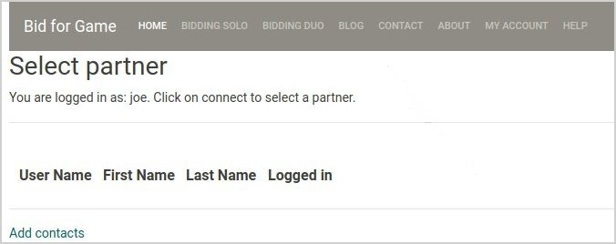
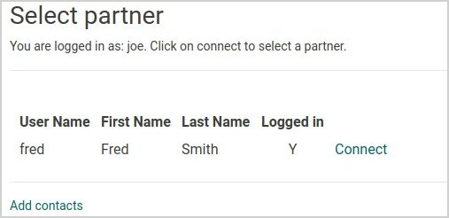
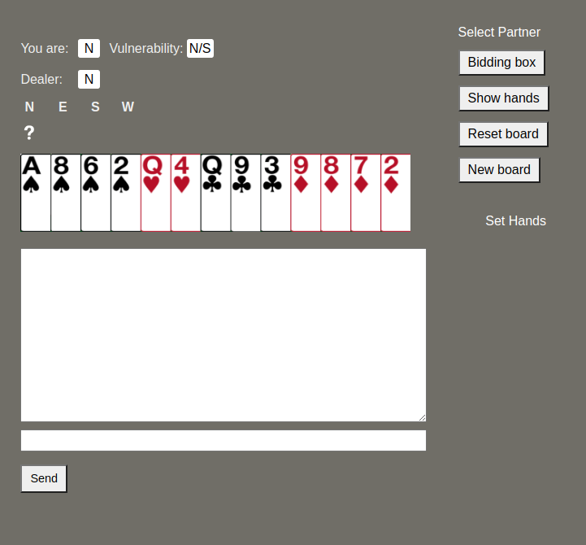
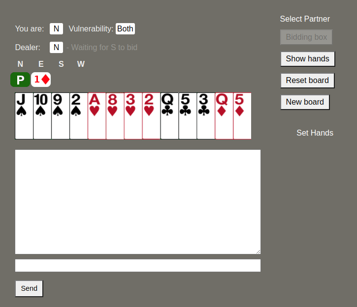
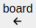
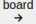

Duo¶
Bid for Game Duo enables you to practice bidding with a partner. You must both be logged in to access this page see Sign Up and Your Account.
You must also have added each other to your respective contacts. To do this go to Bidding Duo and click on Add contacts.

You must obtain their username from your partner and you must share yours with them. Enter their user name, and if it is valid you will see a confirmation message.

When you access Bidding Duo again, or click on Select partner. you will see a list of all of our contacts.

Click on Connect next to your partner’s name and you will be taken to the Duo bidding page.

At the top left you will see board information including the seat at which you sit (You are), the dealer and any bids that have been made before your turn.
Below that is the hand on which you will bid.
Duo provides a chat facility where you can send and receive messages to and from your partner. You may type a message into the lower text box and click on Send. Certain automatic messages will also appear, for example, informing you that your partner has generated a new board.
On the right hand side are a number of buttons and links that you will use. If it is your turn to bid, you will see a “?” prompt under your seat name; if it is your partner’s turn, you will see a flashing message informing next to the Dealer’s name.
If it is your turn to bid, the bidding box will appear automatically. If you click on the bidding box accidently it will disappear. To re-instate it, click on the Bidding box button.

Click on the bid that you wish to make. The bid will appear together with the bid of your left-hand opponent. (Your opponents will be using basic Acol.)

You will then wait for your partner to bid. Their bid will appear and then you may continue.
Clicking on Show hands will display all four hands on the board and any bids made to date. Note that here you can save the hand for for looking at later or discussing with others; see Loading and Saving Files.

If you wish to rebid the hand, you may reset all the bids in the auction by clicking on Reset hand.
If you wish to move on to another hand, click on New board
In the default mode Bid for Game will generate and present you with random hands. Sometimes, however, you may wish to practice bidding on certain hand types, or you may have a file of boards that you wish to practice on. Bid for Game has features that enable you to so that. For a detailed description of how this works see Hand Types.
Set Hands¶
If you click on Set Hands, you will see the hand type selection screen.

The three selections are:
Use random hands - all hands are randomly generated;
Use set hands - you will be presented with hands that fit certain criteria;
Use Deal File - the hands can be processed in turn for the selected file.
Random hands¶
Random hands need no further explanation; they are genuinely random.
Hand Types¶
If you select Use set hands from the Hand Type page you will be shown the Set Hands selection.

Each of these will allow bidding practice in a specific area which will be of help in practicing boards that lend themselves to some standard conventions.
Some of the hands might be edge cases that might, or might not, fit the requirements for the convention. This is deliberate.
The Jacoby 2NT¶
The Jacoby 2NT convention is an artificial, game-forcing response to a 1H or 1S opening bid. The 2NT response shows 4+ trump support with 13+ points (including shortage points). The bid asks partner to describe their hand further so that slam prospects can be judged accordingly
The Negative Double¶
The negative double (aka Sputnik) is a conventional double used by responder after opener starts the bidding with one-of-a-suit and the next player makes a suit overcall.
The double always promises 6+ points and, depending on the auction, at least four cards in at least one of the unbid suits.
If both minors are bid, the double promises both majors;
if both majors are bid, the double promises both minors;
if a minor and a major are bid ,the double promises the other major.
Splinter¶
A splinter bid is a way of agreeing partner’s suit, limiting your hand (say a seven-loser hand with around 9-12 HCP), and showing a shortage in a specific side suit, all at the same time.
The most common splinter situation occurs when opener opens with a major and responder makes a double jump with 4+ card support
Game forcing.
Unassuming Cue Bid¶
An Unassuming Cue Bid (UCB) shows 10+ points (including shortage points) and 3+ card support for partner’s overcall.
Takeout Double¶
The takeout double by overcaller asks partner to bid one of the unbid suits. The double usually shows 11+ points and 3+ cards in each unbid suit. A takeout double can also be used with a 5+ card suit if, otherwise, it would mean bidding at too high a level. A takeout double followed by own suit shows a strong hand (18+ points)
You may select one or more hand type. If you select more than one, hands types will be generated randomly in accordance with the selection.
If you check Display hand type, the hand type name will be shown on the bidding screen. If you so not wish tp see the hand type, leave this unchecked.
Click on Submit to save your selection and start bidding.
Your selection will be remembered.
Deal File¶
If you select Use Deal File from the Hand Type page you will be shown the Deal File selection.

This screen will list all of the files that you have uploaded to Bid for game, see Loading and Saving Files.
To use a file, check it. You are able to select the seat at which you sit for the boards in that file. Your selection will be remembered.
Click on Submit to save your selection and start bidding.

You will now see two new buttons: and . These will allow you to navigate through the boards. The current board number is shown. All other buttons work as described above.